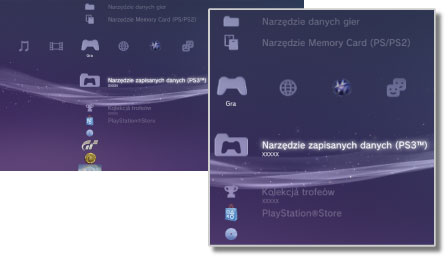

Gra > Kategoria Gra
Kategoria Gra
W kategorii  (Gra) wyświetlane są następujące ikony. Wyświetlane ikony różnią się w zależności od warunków użytkowania.
(Gra) wyświetlane są następujące ikony. Wyświetlane ikony różnią się w zależności od warunków użytkowania.

 |
PlayStation®Store | Umożliwia wyświetlenie informacji ze sklepu PlayStation®Store. |
|---|---|---|
 |
Zakończ grę | Zakończenie programu w formacie PlayStation®3. Jest to jedyna ikona wyświetlana podczas gry. |
 |
(Tytuł) | Umożliwia granie przy użyciu oprogramowania w formacie PlayStation®3. Wybranie ikony powoduje wyświetlenie obrazu. |
  |
Płyta w formacie PlayStation®2 | Umożliwia granie przy użyciu oprogramowania w formacie PlayStation®2. |
 |
Płyta w formacie PlayStation® | Umożliwia granie przy użyciu oprogramowania w formacie PlayStation®. |
 |
Zapisane dane Utility | Umożliwia kopiowanie i usuwanie zapisanych danych oprogramowania w formacie PlayStation®3 oraz wyświetlanie informacji o nich. |
 |
Narzędzie do obsługi kart pamięci | Umożliwia tworzenie i przypisywanie gniazd do wewnętrznych kart pamięci w celu zapisywania danych oprogramowania w formacie PlayStation®2 / PlayStation®. Można również kopiować i usuwać zapisane dane oraz wyświetlać informacje o nich. |
 |
Narzędzie danych gier | W przypadku niektórych gier mogą być zapisywane dodatkowe dane. Można usuwać dane i wyświetlać informacje o nich. |
 |
Kolekcja trofeów | Służy do wyświetlania nagród zebranych w grach obsługujących funkcję wygranych. Po osiągnięciu określonych poziomów lub wykonaniu wymaganych w grze zadań otrzymuje się nagrody za osiągnięcia. |
 |
(Oprogramowanie w formacie PlayStation®3 lub PlayStation®2 zainstalowane na dysku twardym) | Oprogramowanie w formacie PlayStation®3 lub PlayStation®2 zainstalowane na dysku twardym. Na ekranie jest wyświetlana miniatura z wizerunkiem gry. |
 |
(Dane pobrane na dysk twardy) | Ta ikona jest wyświetlana w przypadku gier i dodatków pobranych na dysk twardy. Użycie ikony powoduje zainstalowanie danych. Wyświetlana ikona różni się w zależności od typu danych. |
Wskazówki
- Ikona
 lub
lub  jest wyświetlana w przypadku zawartości chronionej za pomocą zabezpieczeń rodzicielskich. Zawartość można odtworzyć po wprowadzeniu czterocyfrowego hasła. Hasło można ustawić w kategorii
jest wyświetlana w przypadku zawartości chronionej za pomocą zabezpieczeń rodzicielskich. Zawartość można odtworzyć po wprowadzeniu czterocyfrowego hasła. Hasło można ustawić w kategorii  (Ustawienia) >
(Ustawienia) >  (Ustawienia zabezpieczeń).
(Ustawienia zabezpieczeń). - Jeśli urządzenie niezgodne ze standardem HDCP (High-bandwidth Digital Content Protection) zostanie podłączone do konsoli za pomocą kabla HDMI, mogą wystąpić problemy z odtwarzaniem obrazu i/lub dźwięku.
- Płyty Blu-ray chronione prawami autorskimi można odtwarzać w rozdzielczości 1 080p tylko przy użyciu kabla HDMI podłączonego do urządzenia zgodnego ze standardem HDCP.
- W rzadkich przypadkach płyty lub inne nośniki odtwarzane w konsoli PS3™ mogą nie działać prawidłowo. Jest to przeważnie spowodowane różnicami w procesie produkcyjnym lub kodowaniu oprogramowania.
Informacje
- Niektóre produkty w wersji oprogramowania w formacie PlayStation®2 lub PlayStation® mogą działać na konsoli PS3™ inaczej niż na konsoli PlayStation®2 lub PlayStation®, lub mogą działać nieprawidłowo.
- Ponadto oprogramowanie w formacie PlayStation®2 nie może być odtwarzane na niektórych konsolach PS3™. Szczegółowe informacje można znaleźć w dokumencie [Rodzaje odtwarzanych płyt], w witrynie SCE dla danego regionu lub w dokumentacji dołączonej do konsoli PS3™.